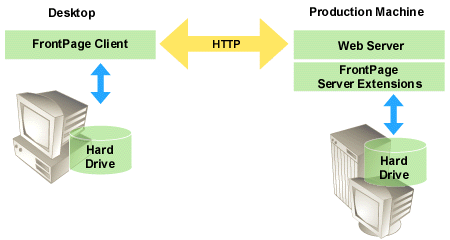

|
| ||
|
| ||
Microsoft Corporation
Updated April 15, 1999
When you publish a FrontPage-extended web, you make it available to site visitors for browsing from a Web server either on the Internet or on an intranet. The Internet and intranets typically use different methods of publishing.
In Internet publishing, the most common method is for an author to create a FrontPage-extended web on the client computer. Then, when the web is completed and tested, the author publishes it to an Internet service provider's Web server by using the Publish Web command in the FrontPage client. Authoring on a local Web server or file system is efficient because it does not require authors to be connected to an Internet service provider while they work on a FrontPage-extended web.

The Publish Web command copies the FrontPage-extended web from a source Web server (or from a client computer's file system) to a destination Web server in batch mode. By default, only new or changed pages and files are copied. Pages and files deleted from the source web are also deleted from the destination web.
When an author publishes a FrontPage-extended web using the Publish Web command, the home page is renamed, if necessary, to match the naming convention on the destination Web server. Also, all FrontPage-based components in the FrontPage-extended web are regenerated to take advantage of platform-specific functionality. For example, when a FrontPage-extended web is published to an IIS server containing Microsoft Index Server, any search forms in the web are configured to use the Index Server.
In intranet publishing, the most common method does not require the Publish Web command. Instead, an author works directly on a Web server on an internal network, which is typically used to share information within an organization. In this method, whenever a page is opened from the Web server and edited, the change is published to the intranet when it is saved in FrontPage.
Did you find this material useful? Gripes? Compliments? Suggestions for other articles? Write us!
© 1999 Microsoft Corporation. All rights reserved. Terms of use.